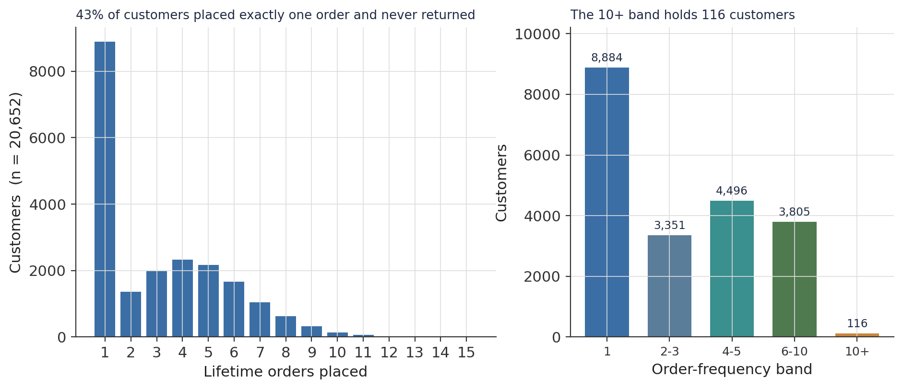
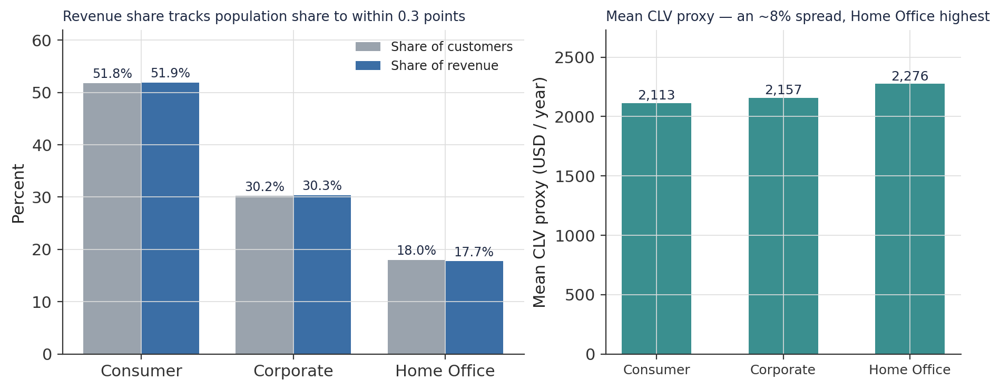
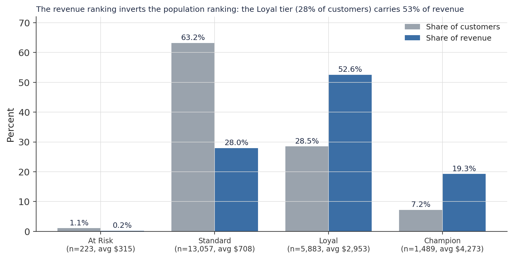
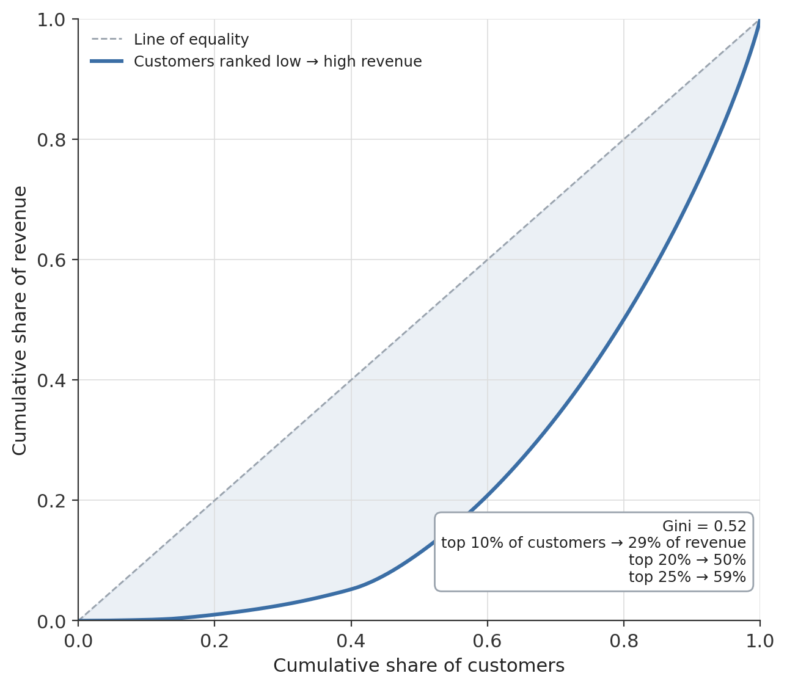
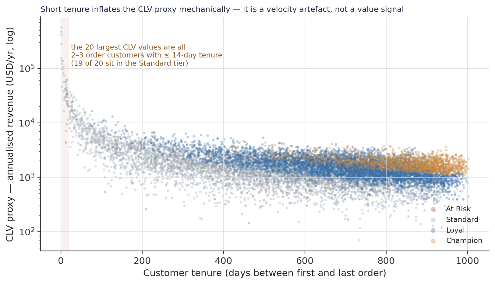
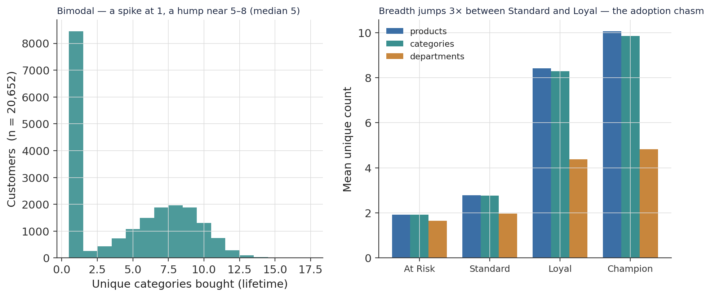
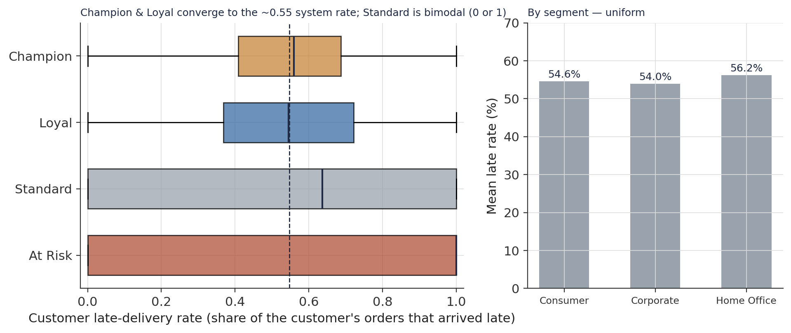
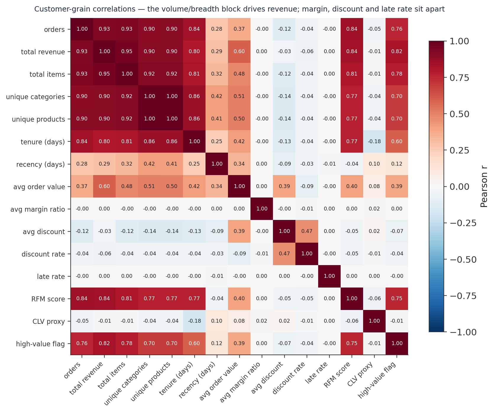
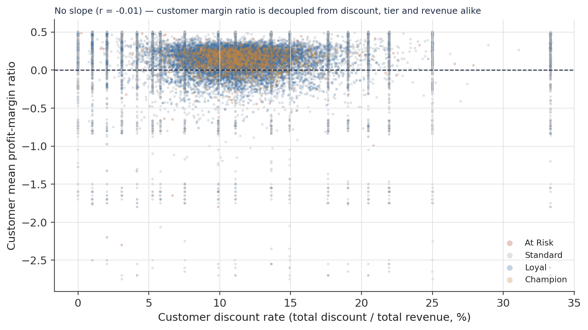

A Bifurcated Customer Base: A Revenue-Concentration Diagnostic of 20,652 Customers
An exploratory customer-grain analysis of a three-year e-commerce dataset — the one-and-done majority, a loyalty pyramid whose revenue ranking inverts its population ranking, and the behavioural axis that actually predicts value.
A diagnostic of how revenue distributes across 20,652 customers. The split: 43% placed exactly one order and never returned. The inversion: the loyalty pyramid runs Standard (63% of customers) → Loyal (28%) → Champion (7%) by headcount, but Loyal alone carries 53% of revenue and the combined Loyal + Champion tiers (36% of customers) carry 72%. Concentration: the top 20% of customers generate 50% of revenue (Gini 0.52) — real but moderate. The value axis: product breadth, not segment or discount — categories bought correlates with revenue at r ≈ 0.90, while margin, discount and late rate are decoupled from customer value entirely.
customer analytics, RFM, loyalty tiers, revenue concentration, Lorenz curve, Gini coefficient, customer lifetime value, CLV proxy, repeat purchase rate, product breadth, churn, exploratory data analysis, Python, pandas
Abstract
This study is a descriptive customer-grain analysis of the DataCo e-commerce dataset — 20,652 customers aggregated from three years of order-item transactions (January 2015 – January 2018). The objective is to characterise how revenue, engagement, and lifetime value distribute across the base. The analytical table is the validated Gold layer of a companion medallion pipeline; every measure is recomputed from it. The base is structurally bifurcated: 43.0% of customers placed exactly one order and never returned, while the median customer placed three. Revenue is moderately concentrated — the top 10% of customers generate 29.2% of revenue, the top 20% generate 49.9% (Gini 0.52) — but the loyalty architecture sharpens the picture: the four RFM-derived tiers run Standard (63.2% of customers) → Loyal (28.5%) → Champion (7.2%) by headcount, yet the Loyal tier alone carries 52.6% of revenue and the combined Loyal + Champion tiers (35.7% of customers) carry 71.8%. The three customer segments (Consumer, Corporate, Home Office) are near-interchangeable: revenue share tracks population share to within 0.3 points, and mean CLV differs by ~8%. The behavioural axis that predicts value is product breadth — number of unique categories bought correlates with total revenue at r ≈ 0.90, and mean breadth triples between the Standard and Loyal tiers. Margin ratio, discount rate, and late-delivery rate are decoupled from customer value (all |r| ≤ 0.06). The CLV proxy is unusable as-is: its 20 largest values are all short-tenure customers whose two or three orders are annualised over a one- to two-week window. No causal claim is made.
Keywords: customer analytics, RFM, loyalty tiers, revenue concentration, Lorenz curve, product breadth, repeat purchase
Introduction
The companion operations study of this dataset examined the supply chain — how orders flow and why half of them arrive late. This study turns to the people who placed the orders: who they are, how often they return, and where the revenue actually sits.
The unit of analysis is the customer. Every field has been aggregated from the transaction stream to one row per customer: their full order history, RFM position, monetary footprint, product breadth, and the delivery experience accumulated across every order they placed. That aggregation is not a simplification — a customer who orders once and a customer who orders fifteen times are indistinguishable in a transaction table but occupy opposite ends of the base at customer grain.
One finding surfaces immediately and recurs in every section: the base operates on two economic logics at once. A large majority transacts once and disappears; a compact minority returns repeatedly and generates most of the revenue. The rest of the analysis is a map of that structure — its shape, its financial consequence, and the behavioural signals that separate the two populations.
Method
Data source
A single analytical table, customer_features_gold (20,652 rows × 39 columns), one row per customer with a first_order between 1 January 2015 and 31 January 2018. Two columns carry structural missingness: avg_inter_order_days (40.8%) and clv_proxy (43.0%) are undefined for single-order customers and, for clv_proxy, for customers whose orders all fall on one day. Every other column is complete. Sample composition is given in Table 1.
Table 1
Customer-Base Composition (N = 20,652)
| Dimension | Composition |
|---|---|
| Order frequency | 1 order 8,884 (43.0%) · 2–3 orders 3,351 · 4–5 orders 4,496 · 6–10 orders 3,805 · 10+ orders 116; median 3, max 15 |
| Customer segment | Consumer 10,695 (51.8%) · Corporate 6,239 (30.2%) · Home Office 3,718 (18.0%) |
| Loyalty tier | Standard 13,057 (63.2%) · Loyal 5,883 (28.5%) · Champion 1,489 (7.2%) · At Risk 223 (1.1%) |
| Preferred shipping mode | Standard Class 13,646 (66%) · Second 3,457 · First 2,711 · Same Day 838 |
| Preferred department | Fan Shop 7,865 · Apparel 6,171 · Discs Shop 2,026 (of 11) |
| Structural NaNs | clv_proxy 8,884 · avg_inter_order_days 8,435 (both = single-order / single-day customers) |
Note. Tenure (customer_lifetime_days) is 0 for 25% of customers — their first and last orders fall on the same day.
Variables and measures
RFM. Each customer receives recency, frequency, and monetary quintile scores (1–5); their sum, rfm_score, ranges 3–15 (observed maximum 13 — no customer is top-quintile on all three axes). Loyalty tier cuts rfm_score into At Risk (≤ 5), Standard (6–9), Loyal (10–12), Champion (> 12). is_high_value_customer flags the top revenue quartile. clv_proxy is annualised revenue: total_revenue / (customer_lifetime_days / 365). Product breadth is the count of distinct products, categories, and departments a customer has ever bought. late_rate is the share of a customer’s orders that arrived late (the operations study’s transaction-level flag, aggregated).
Analytical approach
Descriptive. Distributions are summarised for the volume, tenure, monetary, and breadth families. Revenue concentration is measured with a Lorenz curve, the Gini coefficient, and top-decile revenue shares. Group contrasts (segment, tier) use counts and shares reported together, never one alone. Pairwise Pearson correlations span the 27 numeric features, reported here for a 15-feature focus set. No model is fitted and no hypothesis test is performed; a target-viability scan is summarised in the Discussion.
Software
Python 3.10 with pandas, numpy, and matplotlib.
Results
The behavioural pyramid
The base is front-loaded on a single-order population (Figure 1). 8,884 customers — 43.0% — placed exactly one order and never came back. The remaining 57.0% are repeat buyers; among them the median customer placed 3 orders (IQR 1–5), and a 116-customer apex placed more than ten. Tenure mirrors the shape: a quarter of all customers have a lifetime of zero days (first and last order the same day), the median is 305 days, and the maximum is 1,003. This is the interpretive frame for everything that follows — the pyramid is not a metaphor, it is the literal distribution.
Figure 1
Orders per Customer and the Order-Frequency Bands

Note. The 10+ band (116 customers, 0.6%) is barely visible at this scale yet is financially decisive (see Figure 3).
Segments are interchangeable
The base divides into Consumer (51.8%), Corporate (30.2%), and Home Office (18.0%), and on almost every metric these are the same customer wearing three labels (Figure 2). Revenue share tracks population share to within 0.3 percentage points for all three. Mean orders per customer differ by 0.02 (3.17–3.19). Mean margin ratio is 0.12 across all three. The revenue distribution — median, IQR, skew — is near-identical segment to segment. The only metric that moves at all is the CLV proxy, and it moves ~8% (Consumer $2,113, Corporate $2,157, Home Office $2,276) — a difference small enough, and entangled enough with the CLV artefact described below, to carry little weight. Segment membership is not a lever in this base.
Figure 2
Segment Symmetry: Population, Revenue, and CLV

Note. A later correlation result confirms this: customer_segment carries near-zero independent predictive signal once behavioural features are present.
The loyalty inversion
The four RFM-derived tiers form a population pyramid — Standard 13,057, Loyal 5,883, Champion 1,489, At Risk 223 — but the revenue ranking inverts the top of that pyramid (Figure 3, Table 2). The Loyal tier holds 28.5% of customers and 52.6% of revenue; Champion holds 7.2% and 19.3%; Standard, the 63.2% majority, contributes only 28.0%, at an average of $708 per customer against Loyal’s $2,953 and Champion’s $4,273. A Champion is worth about six Standard customers and fourteen At Risk customers on average — but there are four times more Loyal customers than Champions, so the middle tier, not the apex, carries the revenue. The combined Loyal + Champion tiers — 35.7% of the base — account for 71.8% of revenue.
Figure 3
Loyalty Tier: Share of Customers Versus Share of Revenue

Note. Tiers are ordinal on rfm_score; the revenue figures are sums of total_revenue within each tier.
Table 2
Revenue Architecture by Loyalty Tier
| Tier | Customers | % of base | Total revenue | % of revenue | Avg revenue / customer | Median revenue |
|---|---|---|---|---|---|---|
| At Risk | 223 | 1.1 | $70,288 | 0.2 | $315 | $192 |
| Standard | 13,057 | 63.2 | $9.25M | 28.0 | $708 | $375 |
| Loyal | 5,883 | 28.5 | $17.37M | 52.6 | $2,953 | $2,815 |
| Champion | 1,489 | 7.2 | $6.36M | 19.3 | $4,273 | $4,043 |
| Total | 20,652 | 100 | $33.05M | 100 | $1,601 | $1,295 |
Note. Champion revenue is the most compact of any tier (IQR $3,528–$4,827) — a behaviourally consistent, financially predictable elite.
How concentrated is the revenue, really?
Concentration is real but moderate (Figure 4). The top 10% of customers by revenue generate 29.2% of the total; the top 20% generate 49.9%; the top quartile — the 5,163 is_high_value_customer flags — generate 58.6%. The Gini coefficient on total_revenue is 0.52. The Lorenz curve has a visible kink at ~43% of customers: the single-order population forms an almost flat foot contributing very little, and the curve steepens only once the repeat buyers begin. This is not an 80/20 business — it is closer to 50/20 — but combined with the tier structure it means that protecting the 36% of customers in the Loyal and Champion tiers is equivalent to protecting 72% of revenue.
Figure 4
Lorenz Curve of Revenue Across the Customer Base

Note. The near-flat foot to ~40% is the single-order population; the diagonal is perfect equality.
The CLV proxy is a velocity artefact
clv_proxy annualises a customer’s revenue over their active tenure, and for short tenures that arithmetic explodes (Figure 5). The proxy has a median of $1,513 but a maximum of $564,984 — a customer with two orders and $1,548 of revenue placed one day apart. Every one of the 20 largest CLV values belongs to a customer with two or three orders and a tenure of 14 days or fewer, and 19 of the 20 sit in the Standard tier, not Champion. Plotted against tenure on a log scale, the proxy is a hyperbola: it collapses toward a stable $1,000–$3,000 band for tenures beyond ~200 days, exactly where the Champion and Loyal customers sit. clv_proxy correlates with customer_lifetime_days at r = −0.18. As a modelling target it needs a minimum-tenure filter and a log transform; as reported, it measures compression, not value.
Figure 5
CLV Proxy Versus Customer Tenure

Note. The shaded strip (0–20 days) contains the annualisation blow-ups. All 20 largest values are 2–3-order, ≤14-day-tenure customers.
Product breadth is the value axis
Of all the behavioural features, the one most tightly bound to customer value is how much of the catalogue a customer has bought (Figure 6). The distribution of unique categories per customer is bimodal — a spike at 1 (8,453 customers who never left a single category — almost exactly the single-order population) and a broad hump centred near 7–8. Mean breadth rises steeply with tier: At Risk 1.9 categories, Standard 2.8, then a jump to Loyal 8.3 and Champion 9.8. The step from Standard to Loyal roughly triples breadth — an adoption threshold that separates transient buyers from committed ones. In the correlation matrix (Figure 8), n_unique_categories and n_unique_products correlate with total_revenue at r ≈ 0.90 — nearly as strong as order count itself (r = 0.93).
Figure 6
Category Breadth: Distribution and the Tier Gradient

Note. The gap between the single-category spike and the main hump is the “adoption chasm” — customers who cross it tend to keep expanding.
Late-delivery exposure by tier
The operations study found the late-delivery rate (54.7%) uniform across shipping mode’s promise and destination region. At customer grain it is uniform across segment too — Consumer 54.6%, Corporate 54.0%, Home Office 56.2% (Figure 7, right). Across tiers the central tendency is uniform, but the spread is not: At Risk customers, with one or two orders each, are bimodal at 0 or 1 (median 1.0); Standard customers span the full 0–1 range; and Champion and Loyal customers converge tightly on the ~0.55 system rate (IQR 0.28 and 0.35) — the statistical consequence of placing many orders against a fixed late-delivery probability (Figure 7, left). The most engaged customers are not shielded from the operational failure; they simply have the longest record of absorbing it.
Figure 7
Customer Late-Delivery Rate by Loyalty Tier and by Segment

Note. late_rate correlates with total_revenue at r = 0.00 — value confers no protection.
What connects to what
The focused correlation matrix (Figure 8) resolves the base into two blocks. A dense volume / breadth / revenue block — orders, total items, unique categories, unique products, tenure, RFM score, and the high-value flag — is internally correlated at r = 0.7–0.95, with total_revenue driven by order count (0.93), category breadth (0.90), product breadth (0.90), and tenure (0.80). Separately, avg_margin_ratio, discount_rate, and late_rate form a near-null row — each correlates with every value feature at |r| ≤ 0.06. Margin ratio is also flat across tiers (mean 0.12 in every tier; the median actually falls from 0.22 in Standard to 0.14 in Champion) — the tier gradient lives in order value and frequency, not in margin. recency_days sits apart with weak positive correlations, an artefact of the observation window (recent joiners have had less time to accumulate orders).
Figure 8
Customer-Grain Correlation Matrix (15-feature focus set)

Note. Pearson r; the near-white margin, discount, and late-rate rows are the visual signature of decoupling from value.
The discount–margin null is worth isolating (Figure 9). Plotting each customer’s discount rate against their mean margin ratio produces a flat band with no slope (r = −0.01) — discounting intensity does not explain customer profitability. A tail of customers carries deeply negative mean margin (to −2.8) at low discount, which is the fixed-fulfilment-cost mechanism the operations study identified, now visible at customer grain: low-ticket buyers whose per-order economics are underwater regardless of any promotion.
Figure 9
Customer Discount Rate Versus Mean Margin Ratio

Note. Colour is loyalty tier; the negative-margin tail is not concentrated in any tier or discount band.
Discussion
Principal findings
Three results define the base. First, it is bifurcated: 43% one-and-done, 57% repeat, with a median of three orders — the business runs an acquisition funnel and a retention engine simultaneously and the two barely overlap. Second, revenue concentration is moderate but the loyalty structure is sharp: top 20% → 50% of revenue (Gini 0.52), yet 36% of customers in the Loyal and Champion tiers hold 72%, and within that the middle tier (Loyal) rather than the apex (Champion) is the single largest revenue block. Third, value is behavioural, not demographic: it is predicted by order frequency, tenure, and — distinctively — product breadth (r ≈ 0.90 on categories bought), while segment, discount, margin, and late-delivery exposure carry essentially no signal.
The mechanism worth naming
The Standard-to-Loyal boundary is where the money is made. Standard customers average 2.8 unique categories; Loyal customers average 8.3. That single behavioural step — moving a customer from a one- or two-category relationship into a multi-category one — is what the tier jump encodes, and it triples both breadth and per-customer revenue. It is a more actionable target than “increase loyalty” because it names the specific behaviour: catalogue adoption. The single-category spike in Figure 6 (8,453 customers) is the pool that step would draw from, and the 43% single-order population is the pool before that.
Limitations
The analysis is descriptive; no relationship here is shown to be causal, and the direction of the breadth–revenue association is not identified (breadth may drive value, value may enable breadth, or a third factor may drive both). The observation window is left- and right-censored: customers who joined near the end have truncated histories, which inflates the single-order share and depresses tenure for recent cohorts. The clv_proxy field is unusable as reported and was treated only as a diagnostic. avg_margin_ratio and the extreme negative-margin customers are taken as recorded. The late_delivery_risk-based tolerance reading is inferential — the data shows engaged customers have absorbed a high late rate, not that they will continue to. Finally, recency_days and rfm_score inherit the window’s selection effects and should be read as within-dataset positions, not absolute churn measures.
Modelling targets
A target-viability scan of the customer grain ranks total_profit, avg_order_value, and orders_bucket as the cleanest supervised targets (near-zero skew, no structural missingness). loyalty_tier (four-class, 63% majority) and is_high_value_customer (binary, 75% majority) need stratification or reweighting. avg_margin_ratio, avg_profit_per_order, avg_discount, and avg_revenue all carry heavy skew and need a transform. clv_proxy requires a minimum-tenure filter and log transform before it can serve as a regression target. customer_segment scores well on cleanliness but near-zero on mutual information — consistent with the segment symmetry throughout.
Conclusion
This customer base earns its revenue from about a third of its members, concentrated in a loyalty tier defined by how broadly customers shop rather than by who they are or what they were charged. The operational failure documented in the companion study lands on that revenue-bearing third as heavily as on anyone else. The companion product and clickstream studies extend the picture to the catalogue those customers explore and the sessions in which they explore it.
References
Constante, F., Silva, F., & Pereira, A. (2019). DataCo smart supply chain for big data analysis (Version 5) [Data set]. Mendeley Data. https://doi.org/10.17632/8gx2fvg2k6.5
Fader, P. S., & Hardie, B. G. S. (2009). Probability models for customer-base analysis. Journal of Interactive Marketing, 23(1), 61–69. https://doi.org/10.1016/j.intmar.2008.11.003
Gini, C. (1912). Variabilità e mutabilità: Contributo allo studio delle distribuzioni e delle relazioni statistiche. Tipografia di Paolo Cuppini.
Harris, C. R., Millman, K. J., van der Walt, S. J., Gommers, R., Virtanen, P., Cournapeau, D., Wieser, E., Taylor, J., Berg, S., Smith, N. J., Kern, R., Picus, M., Hoyer, S., van Kerkwijk, M. H., Brett, M., Haldane, A., del Río, J. F., Wiebe, M., Peterson, P., … Oliphant, T. E. (2020). Array programming with NumPy. Nature, 585, 357–362. https://doi.org/10.1038/s41586-020-2649-2
The pandas development team. (2020). pandas-dev/pandas: Pandas (Version latest) [Computer software]. Zenodo. https://doi.org/10.5281/zenodo.3509134
Analysis and figures by the author. A descriptive customer-base study of one dataset; no estimate here supports a causal claim, and the CLV proxy is reported only as a diagnostic.